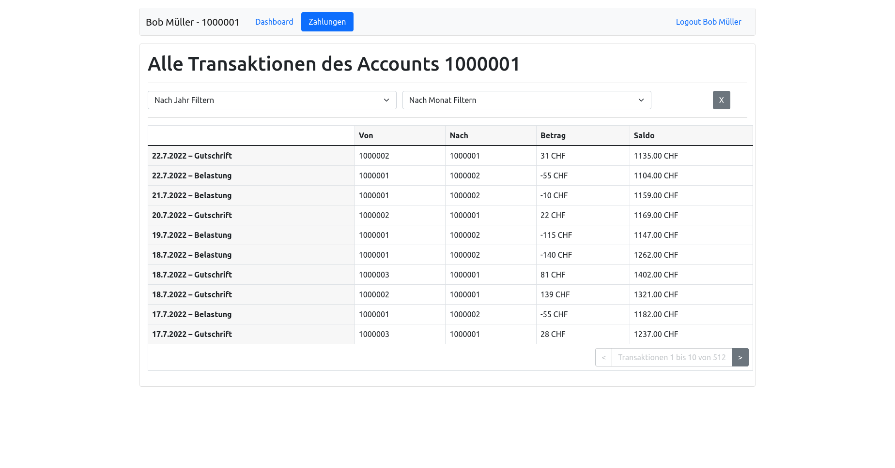

Für das Testat steht ein Assignment auf GitHub Classroom bereit. Die Ausgangslage ist dabei die Solution des vorhergehenden Schritts.
Für das Testat sollen Sie folgende zwei Aufgaben lösen:
Gebrauch vom Redux Store
Im Moment werden verschiedne Objekte und Werte als Props in App.js an die Unterkomponenten mitgegeben. Schreibe für diese Props passende Reducers, Actions und Slices. Entferne die Props und verbinde die Komponenten (Home, Dashboard, etc.) direkt mit dem Redux-Store.
Task
Integriere die React States in den Redux Store. Anbei eine Liste der Props, welche mindestens in den Redux State verlegt werden müssen:
User
Token
isAuthenticated
Transactions
Achte auf folgende Dinge:
Erstelle einen transactionSlice. Orientiere dich dabei am `loginSlice.js
isAuthenticated kann dem bestehenden loginSlice hinzugefügt werden und braucht keinen eigenen Slice.
User, Token und isAuthenticated States sollen bei Page Reload wieder gesetzt werden. Überlege dir, wie dies mit dem useEffect-Hook und dem sessionStorage verbunden werden kann.
Transaktions Komponente
Erweitere die Transactions-Komponente anhand untenstehendem Abbild.

Task
Erweitere die Transaction Komponente.
Um die Implementierung zu vereinfachen, werden drei Files zur Verfügung gestellt.
MonthDropdown
YearDropDown
PaginatedTransactionTable
Füge diese Files dem ./src/components Ordner der BOR Applikation hinzu und benutze diese Templates zur Erstellung der Transactions-Komponente.
Da es sich bei diesem Task um eine grössere Übung handelt, geben wir anbei eine Anleitung für die vorzunehmenden Schritte:
1. Fetching der Transaktionen
Nutze api.js, um die Transaktionen abzufragen und speichere die Response in den Redux Store mit Hilfe der Aktionen, welche Du im vorherigen Schritt erstellt hast.
Beachte: Die getTransactions(...) Funktion enthält Argumente, mit welchen Du beinflussen kannst, welche Transaktionen abgefragt werden. Dies wird später nochmals wichtig für die Filterung der Transaktionen.
Implementiere die Abfrage in einer eigenen Funktion, um diese später wiederverwenden zu können.
2. Einbinden der PaginatedTransactionsTable-Komponente mit Props:
total soll zusammen mit den Transaktionen im Redux Store abgelegt werden. Die untenstehende Abfrage zeigt auf, wie Du an den Wert kommst:
getTransactions(token,fromDate,toDate,itemsPerPage,skip).then(({result:transactions,query:{resultcount}})=>{// add transactions to redux store// add resultcount to redux store// resultcount is the total of all transactions in database}
skip beschreibt wieviele Transaktionen bei einer Abfrage übergangen wurden. Kann im React State gehalten werden. Das Intervall soll auf 10 Transaktionen beschränkt werden.
onForward / onBack beschreiben die angewendeten Funktionen beim Betätgen der Navigation in der Tabelle. Diese Funktionen verändern den skip Wert. Beachte: Falls die Tabelle vorwärts/rückwärts navigiert wird, müssen ebenfalls die neuen Transaktionen abgefragt werden.
3. Filter
Integriere MonthDropdown und YearDropdown
fromDate und toDate sollen als ISOString der getTransaction(...)-Funktion übergeben werden. Benutze das folgende Template: